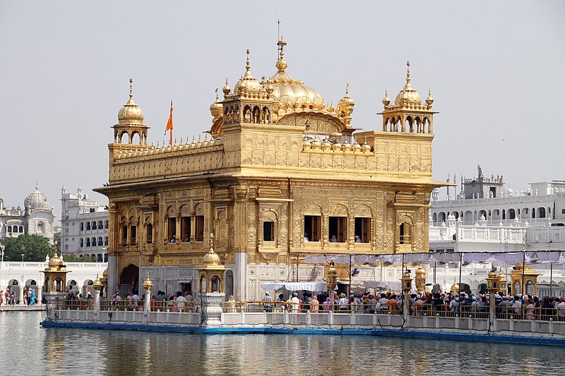

HOME
Golden Temple

About
Sri Harmandir Sahib (lit. "the abode of God"), also known as Golden Temple and the Darbar Sahib, is the holiest Gurdwara and the most important pilgrimage site of Sikhism. It is located in the city of Amritsar, Punjab, India.
The temple is built around a man-made pool (sarovar) that was completed by Guru Ram Das in 1577. Guru Arjan – the fifth Guru of Sikhism, requested Mian Mir – a Muslim Pir of Lahore to lay its foundation stone in 1589.
In 1604, Guru Arjan placed a copy of the Adi Granth in Harmandir Sahib, calling the site Ath Sath Tirath (lit. "shrine of 68 pilgrimages"). The temple was repeatedly rebuilt by the Sikhs after it became a target of persecution and
was destroyed several times by the Muslim armies from Afghanistan and the Mughal Empire. The army led by Ahmad Shah Abdali, for example, demolished it in 1757 and again in 1762, then filled the pool with garbage. Maharaja Ranjit Singh after founding the Sikh Empire, rebuilt it in marble and copper in 1809,
overlaid the sanctum with gold foil in 1830. This has led to the name the Golden Temple.
The temple is spiritually the most significant shrine in Sikhism. It became a center of the Singh Sabha Movement between 1883 and 1920s. In the early 1980s, the temple became a center of conflict
between the Indian government led by Indira Gandhi, some Sikh groups and a militant movement led by Jarnail Singh Bhindranwale seeking to carve out a new nation named Khalistan from parts of India and Pakistan. In 1984, Gandhi sent in the army, leading to numerous deaths of militants,
soldiers and civilians, as well as causing much damage to the temple and the destruction of Akal Takht. The temple complex was rebuilt again after the 1984 damage.